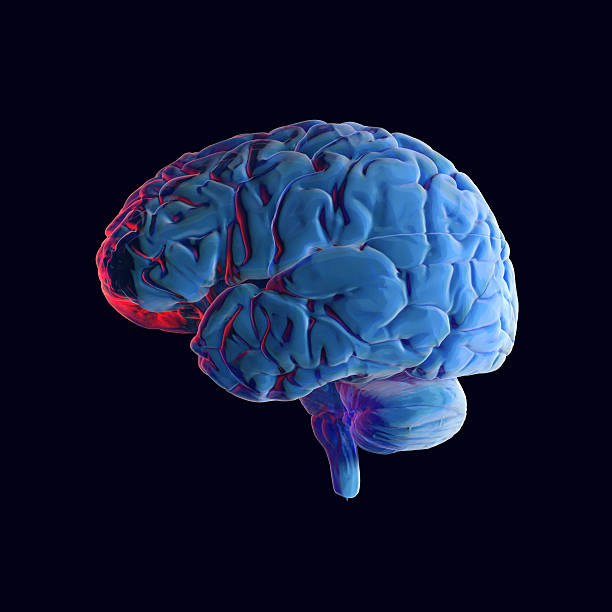
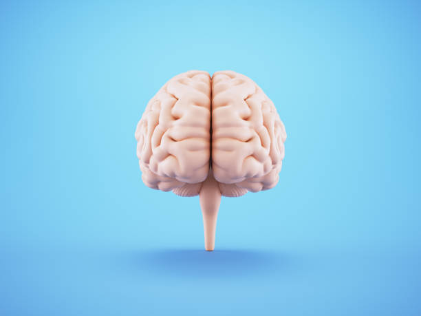
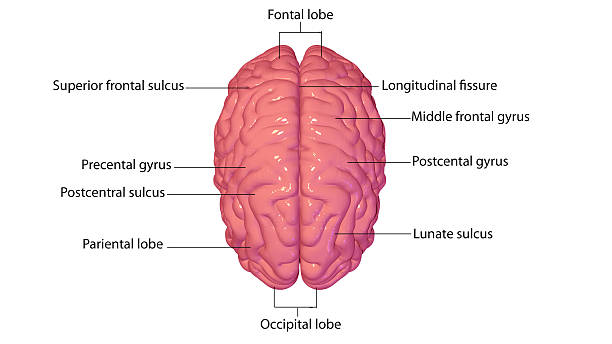
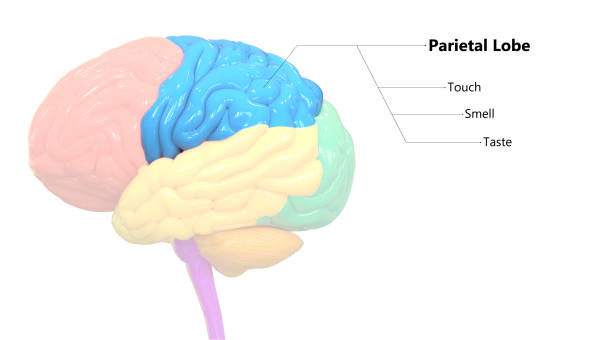
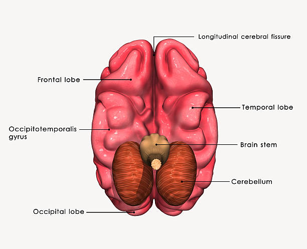
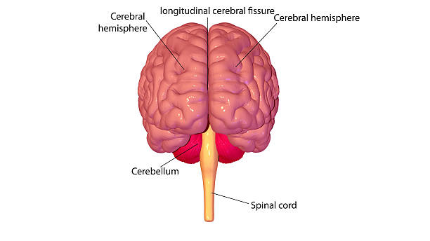
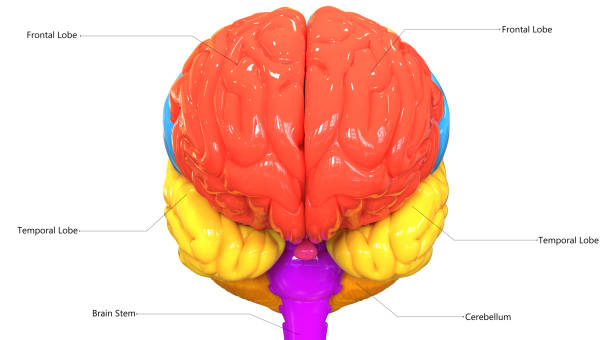
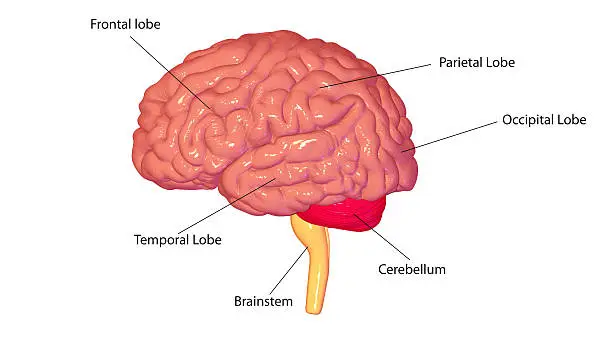

neuroscience is the study of the nervous system, from stucture to function,
development to degeneration, in health and in disease.
it cover the whole nervous system, with a primary focus on the brain.increadibly
complex,our brain define who we are and what we do.
brain anatomy
the brain is a complex organ that control thought,
memory, emotion, touch, motorskill
vision, breathing, temperature, and many other functions that regulate the body.
it is made up of billions of cells called neurons. it also response to how people
respond to stressful situation (i.e.writing of an exam, loss of a job,
birth of a child, illness.etc) by regulating heart and breathing rates.
lateral view of the brain

dorsal view of the brain

frontal view of the brain
the three main parts of the brain
the human brain,the control center of the nervous system
is a complex organ divided into three main part :the cerebrum,
cerebellum, and the brain stem. each plays a different role in
how we think, feel, and function:
cerebrum
the cerebrum processes sensory information,control voluntary movement,
and is responsible for higher-level function like consious thought,
language, and voluntary movement.
It is devided into two hemispheres, the left and right, which communicate
through a structure called the corpus callosum. each hemisphere is
further divided into lobes:frontal, pariental, temporal, and occipital.

lateral view of cerebrum

dorsal view of cerebrum
cerebellum
the cerebellum, or little brain, is located at the back of the
brain,
underneath the cerebrum and behind the brainstem, responsible for coordinating movements, balance,
posture, and motor learning.
it contain a vast number of neurons and processes sensory information
from other parts of nervous system to ensure movement are smooth, precise, and coordinated.
damage to the cerebellum can lead to difficulties with fine motor control,
coordination,
posture, and balance

fontal view of cerebellum

dorsal view of cerebellum
brainstem
the brainstem is the part of the brain that connects the cerebrum and
cerebellum
to the spinal cord, composed of the midbrain, pons, and medulla oblongata
it control essential automatic bodily functions such as breathing, heart rate, ands blood
pressure, as well as regulating consciousness and the sleep-wake cycle.
The brainstem also act as a crucial passageway for neural signals, housing most
of the cranial and nerve nuclei and relaying sensory and motor information between the brain and the
body.

dorsal view of brain stem

lateral view of brain stem
cranial nerve functions:
It house the nuclei for most of the twelve craniual nerves, which are responsible
for facial sensations, expression, eye movements, and other functions.
brain function
the brain function involves the brain acting as a central control system, receiving
sensory information and sending signals to control thoughts, emotional, movement, language, memory,
and vital bodily processes like breathing and heart rate.
it is composed of specialized cells called neurons that form intricate networks to process information
how the brain function
Information processing:
the brain receives information from the body's sense, interprets it, and then sends out message to
contorol various actions and processes.
Neuronal communication
neurons communicate with each other using electrical and chemical signals through complex networks.
Stay Connected with Neuroscience Insights
Subscribe to our monthly newsletter and get cutting-edge updates in brain research, new
discoveries, and upcoming neuroscience events — directly to your inbox.
🧬 Latest brain research updates
🧠 Interviews with top neuroscientists
📅 Invitations to webinars and conferences
📘 Curated articles, tools, and resources
We respect your privacy. you can Unsubscribe at any time.